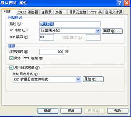
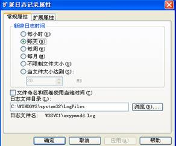
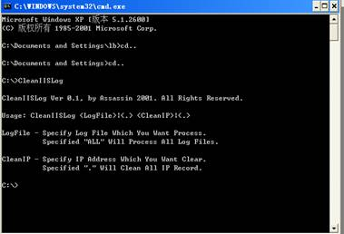
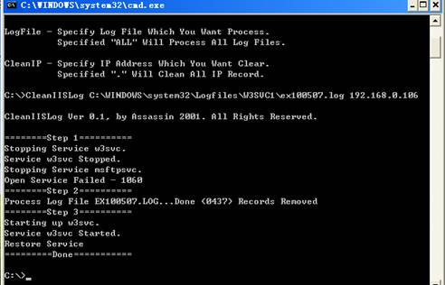
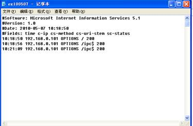

Windows日志工具清除实验1
实验目的
1、 了解IIS日志文件清除的基本原理。
1、 掌握CleanIISLog.exe工具的使用方法和各项功能。
2、 通过使用CleanIISLog.exe工具清除本机上的IIS日志。
3、 掌握针对日志清除攻击的防御方法。
实验要求
1、 认真阅读和掌握本实验相关的知识点。
2、 上机实现软件的基本操作。
3、 得到实验结果，并加以分析生成实验报告。
注：因为实验所选取的软件版本不同，学生要有举一反三的能力，通过对该软件的使用能掌握运行其他版本或类似软件的方法。
实验步骤
1、获取IIS日志文件的存放路径和文件名
通过 “控制面板”-“管理工具”-“Internet 信息服务”打开Internet
信息服务管理器，从“Internet 信息服务”依次展开至“网站”-“默认网站”，然后右键单击选择“属性”，打开默认网站属性配置窗口，如图1所示。

图1打开默认网站“属性”配置
查看“W3C扩展日志文件”的保存位置。在网站“属性”配置中，如果没有启用日志记录，则在系统中不会记录IIS的日志，默认是启用日志记录。单击活动日志格式下面的“属性”按钮，在弹出的窗口中可以看到日志记录的保存位置，如图2所示，单击“扩展属性”可以查看日志记录的详细设置选项。

图2 查看W3C扩展日志文件的保存位置
说明：
①IIS日志文件一般是存放于系统目录的logfiles目录，例如在WindowsXP以及Windows2003操作系统中，默认日志文件存放于“C:\WINDOWS\system32\Logfiles\”目录下，日志文件夹以“W3SVC”进行命名，如果有多个网站目录，则会存在多个“W3SVC”目录。
2、查看日志文件
如果在IIS配置中启用了日志记录，则用户在访问网站时，系统会自动记录IIS日志，并生成log文件。在本案例中直接打开“C:\WINDOWS\system32\Logfiles\W3SVC1\ex100507.log”日志文件，如图3所示，其中包含了用户访问的IP地址，访问的网站文件等信息

图3 打开日志文件
3、测试CleanIISLog软件能否正常运行
启动DOS窗口，并到CleanIISLog.exe软件所在目录下，然后输入“CleanIISLog”命令；如果运行正常则会给出一些帮助信息，如图4所示；否则会提示错误信息。

图4 测试CleanIISLog软件
4、使用CleanIISLog.exe清除IIS日志
在DOS窗口中输入以下命令：
CleanIISLog
C:\WINDOWS\system32\Logfiles\W3SVC1\ex100507.log 192.168.0.106
其中“C:\WINDOWS\system32\Logfiles\W3SVC1\ex100507.log”为需要清除的日志文件，“192.168.0.106”为要清除的IP地址。执行成功后，会提示修改了多少处，如图5所示。如果是需要清除其他字符，则可以将IP地址更换为字符即可。

图5执行清除日志命令
再次打开日志文件“ex100507.log”，从中可以发现该日志中无“192.168.0.106”IP地址信息，如图6所示。

图6 删除IP地址后的日志文件
实验总结
本案例通过CleanIISLog软件来修改日志文件中的内容，尤其是清除IP地址以及文件名称尤为有用，清除后，日志文件依然存在。